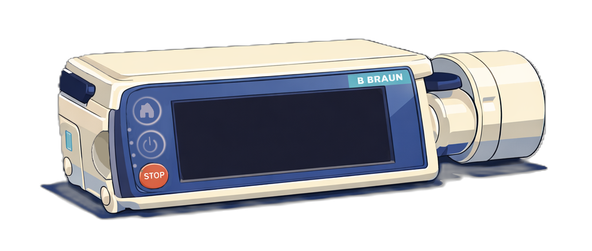
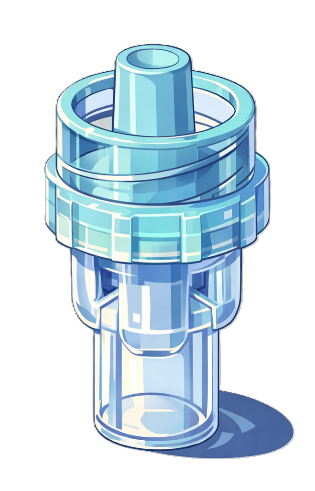

Vous arrivez auprès du patient. Mais une partie de la ligne de perfusion s’est débranchée...
Reconnectez la ligne de perfusion du pousse seringue et reconfigurez le montage de la ligne de perfusion en placant correctement la valve anti-retour sur la ligne principale.


voie 1
voie 2
site A
site B
➡
Une collègue passe à proximité et s’arrête en vous voyant manipuler la ligne.
Elle vous interpelle et vous pose alors quelques questions.